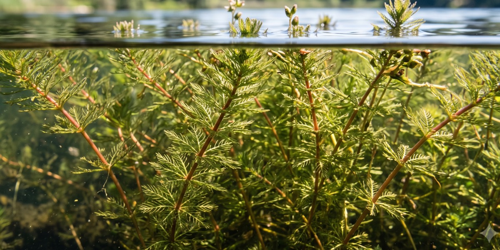
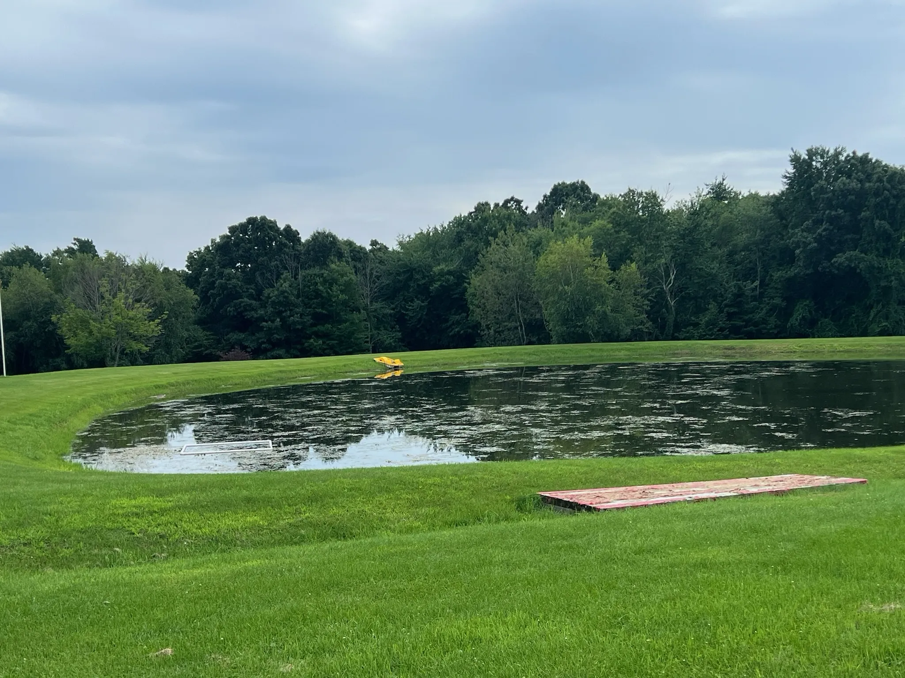
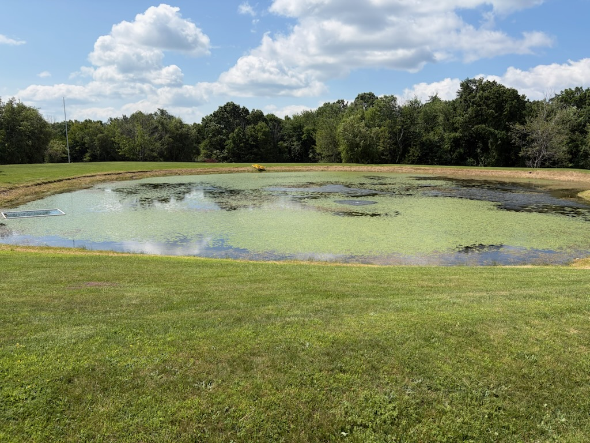
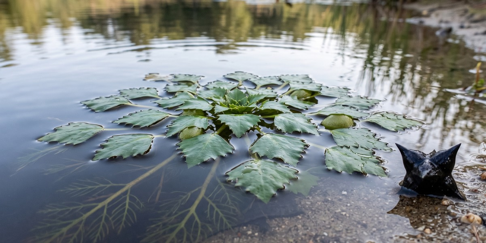
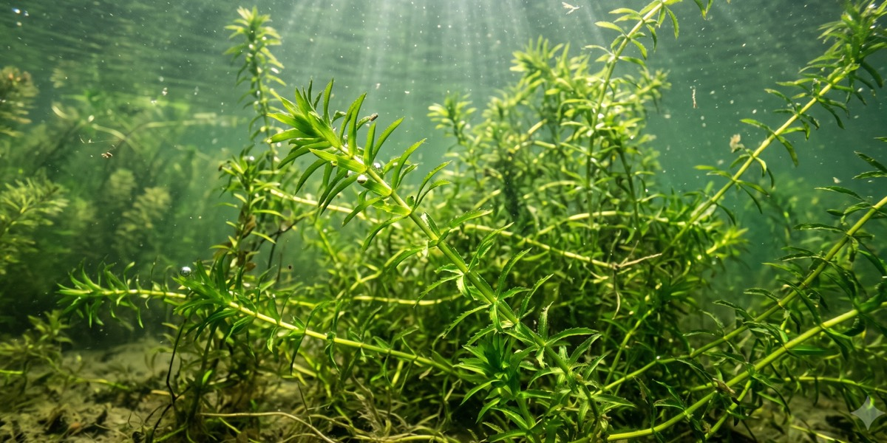
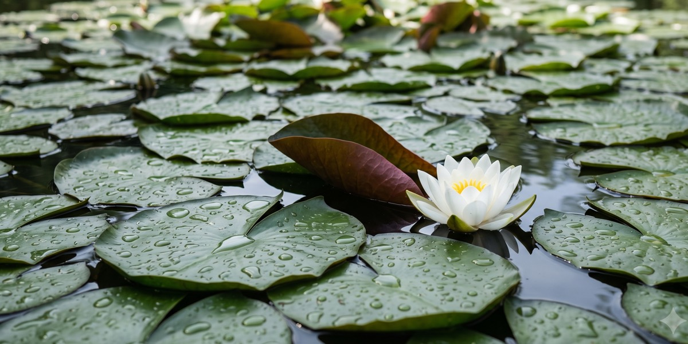
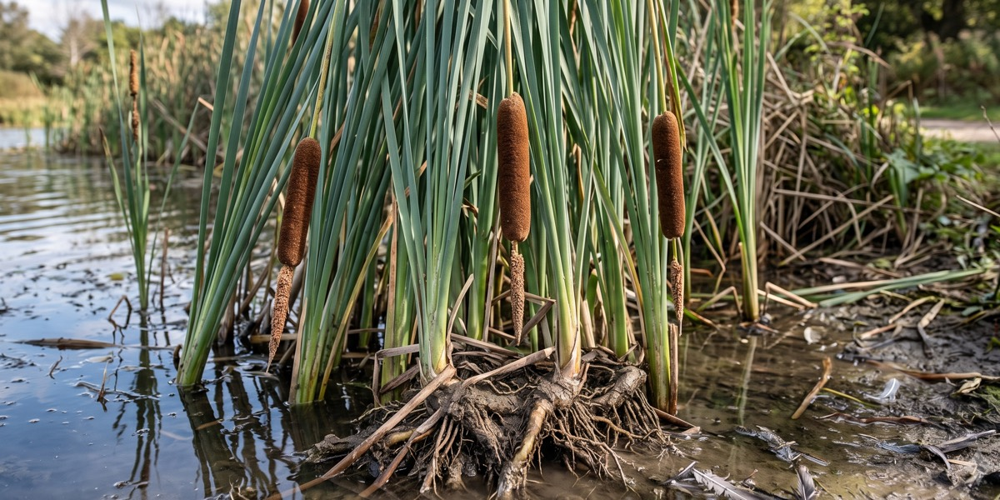
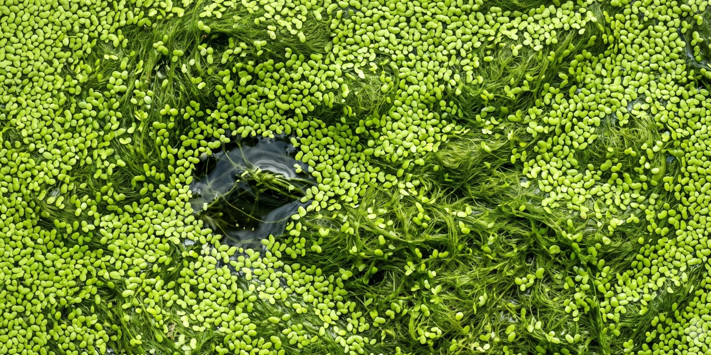

Eurasian Watermilfoil
Feathery, dense, and it spreads from a single broken fragment. Forms mats thick enough to stop a propeller. The reason most people call us.
Aquatic Weed Harvesting LLC · Based in the Hudson Valley
We cut them, collect them, and haul them off your shoreline — mechanically, with zero chemicals. Our work boat gets into the shallow, windy water the big harvesters can't touch.
Our commitment
Eco-friendly preservation for lake & pond weed maintenance.
Aquatic Weed Harvesting values our natural resources and strives to improve your lake, pond or riverfront. When removing invasive weeds, the water's chemistry returns to normal and the oxygen levels increase, improving the overall health of the aquatic life. This can be seen immediately with the response of fish, frogs, and other species. Your living ecosystem requires a long term health plan. Together we can form an environmental stewardship for sustaining your waterway while enhancing the aesthetic beauty and value of your property.
Conservation and sustainable practices need to be implemented to protect our natural environment. We thank responsible people like you who seek solutions to preserve our natural resources.
Join us to win the fight to clean invasive aquatic vegetation from our waterways.
Before & after
Drag the slider to see what comes out of the water.

After
BeforeWhat we remove

Feathery, dense, and it spreads from a single broken fragment. Forms mats thick enough to stop a propeller. The reason most people call us.

Floating rosettes that blanket the surface and drop spiked nuts on your beach. Timing matters — we target it before the seed drops.

Aggressive, fast, and regulated in New York. Grows from tubers, so mechanical removal is about staying ahead of it every season.

Thick enough to stop a canoe and tangle a swimmer. We clear swim lanes and dock approaches, and leave the rest as habitat if you want it.

Root-bound and stubborn. This is a bucket job, not a cutting job — we take the root ball so it doesn't march further into the pond.

Surface scum that shows up on the windward shore. Skimmed off the top and removed before it turns your waterfront green.
Also on our waters: Coontail (Hornwort), Phragmites, Curly-leaf Pondweed and general nuisance growth — plus the leaves, brush and downed logs that come with a wooded shoreline. Not sure what you've got? That's normal. Send a photo and we'll identify it.
Why now
Our waterways face accelerating invasive pressure as seeds and root fragments spread through boat traffic, wildlife and currents. Invasive plants like water chestnut, milfoil, phragmites and hydrilla establish dense mats that deplete oxygen, block navigation, prohibit swimming and eliminate habitat for native species.
Harvest mechanically before your invasive coverage expands and closes your waterway.
Request an estimateFree estimate
That’s all we need to start. We’ll tell you what’s growing, what it takes to clear it and what it costs — no charge, no obligation.